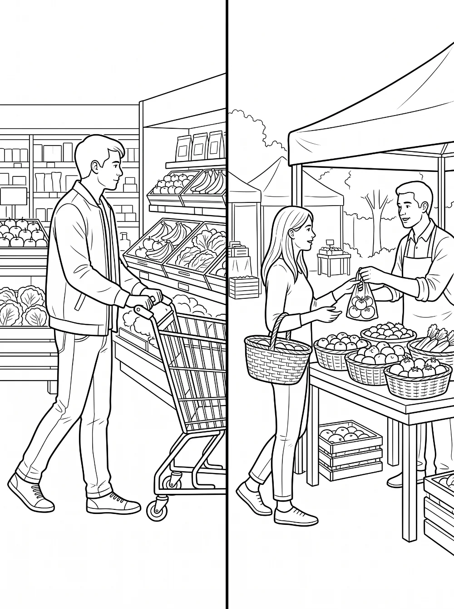
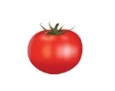

 Je m’appelle :
Je m’appelle :
Au supermarché
2 / 4
J’écris le numéro.
des {{ m.mot }}
{{ m.rep }}
Au marché3 / 4
 Je lis, je joue la scène.
Je lis, je joue la scène.
ClientBonjour madame. Je voudrais un kilo de carottes , s’il vous plaît.
VendeurEt avec ceci ?
ClientEst-ce qu’il y a des cerises ?
VendeurNon, il n’y a pas de cerises .
ClientJe voudrais un kilo de tomates

.VendeurEt avec ceci ?
ClientCe sera tout. Ça fait combien, s’il vous plaît ?
VendeurÇa fait … euros.
ClientMerci, bonne journée !
Au supermarché
Corrigé4 / 4
des {{ m.mot }}
{{ m.rep }}